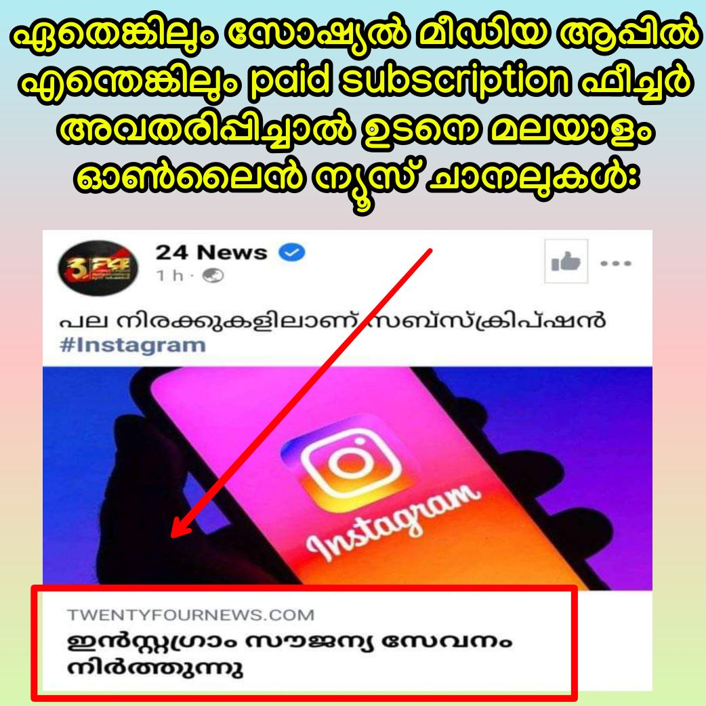

എങ്ങനെയാണ് Subscription?
ഇൻസ്റ്റഗ്രാമിലെ ഏതെങ്കിലും ഒരു content creater / influencer ന്റെ പേജ് follow ചെയുന്നതോടൊപ്പം subscribe എന്നൊരു ബട്ടനും ഉണ്ടാവും.
Follow ചെയ്തവർക്ക് സാധാരണ പോലെ അവരുടെ പബ്ലിക് പോസ്റ്റുകളും സ്റ്റോറികളും ലൈവ് വീഡിയോസും എല്ലാം കാണാൻ കഴിയും.
എന്നാൽ ഇതു കൂടാതെ content creators ന് പേജിൽ സ്പെഷ്യൽ പോസ്റ്റുകളും ഇടാൻ കഴിയും. Subscription എടുത്ത followers നു മാത്രമാവും ഇവ (exclusive live videos & stories etc.) കാണാൻ സാധിക്കുക.
ഇന്ത്യയിലെ Instagram paid subscription നിരക്കുകൾ ₹89, ₹440, ₹890 (per month) എന്നിങ്ങനെയാണ് എന്നാണ് റിപ്പോർട്ടുകൾ.
ഈ ഫീച്ചർ കുറേ നാൾ മുന്നേ തന്നെ U.S ൽ ലഭ്യമായിരുന്നു. Indian creators ന് ഇതുവരെ തങ്ങളുടെ പേജിൽ subscription activate ചെയ്യാനുള്ള ഓപ്ഷൻ വന്നിട്ടില്ല. എന്നാൽ Indian users ന് paid subscription ഉള്ള U.S പേജുകൾ subscribe ചെയ്യാവുന്നതാണ്.
2021 ഒക്ടോബർ മാസത്തിൽ ട്വിറ്ററും superfollows എന്ന പേരിൽ സമാനമായ ഫീച്ചർ അവതരിപ്പിച്ചിരുന്നു.

Related article:
• DW: Channel overview